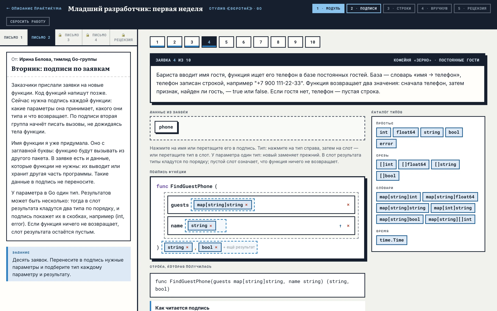
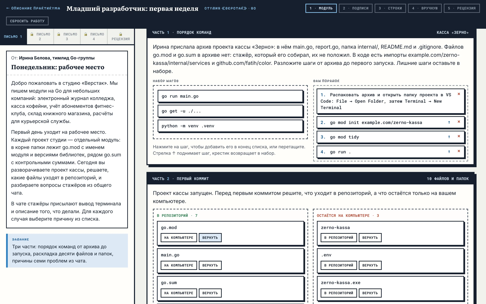
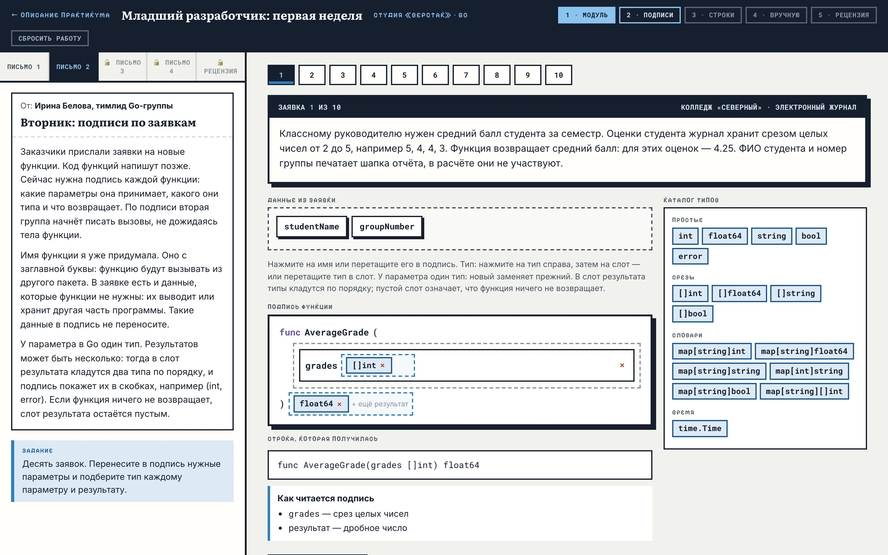
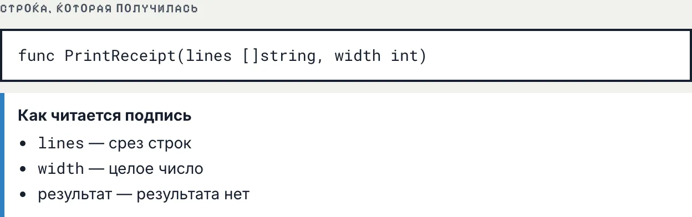
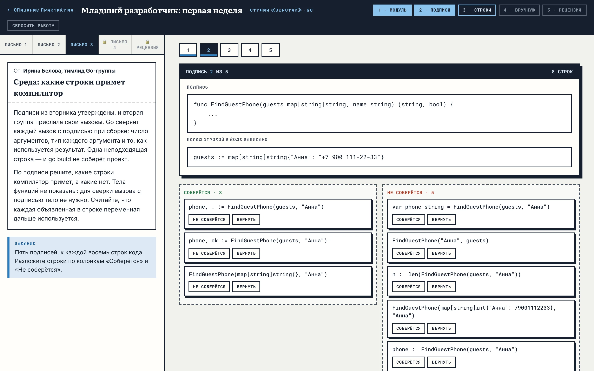
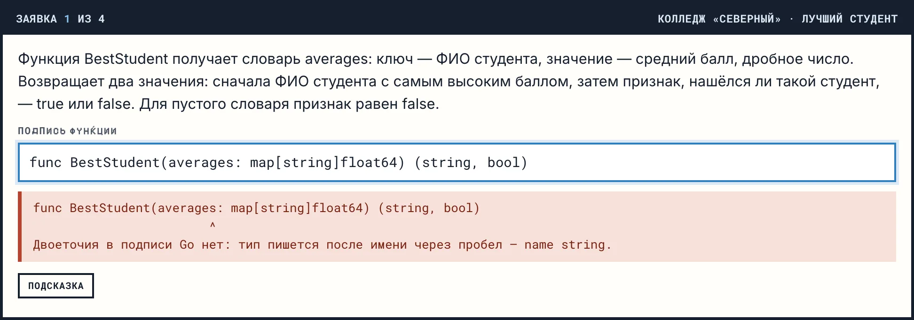
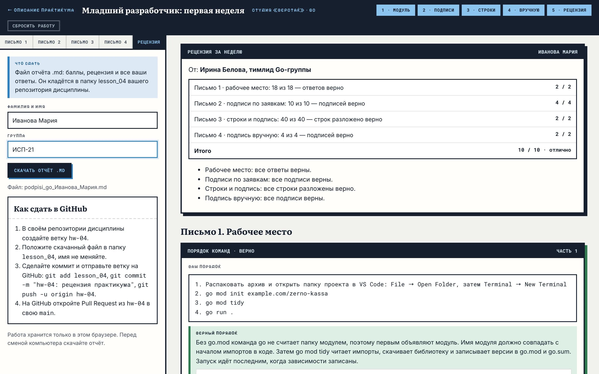

МДК.01.01 · разработка программных модулей · практикум · ветка Go
Практикум · Go
Младший разработчик:
первая неделя
Ролевой практикум по модулю проекта и подписям функций на Go. Студент неделю работает стажёром в студии разработки: разворачивает проект, разбирает проблемы со сборкой, составляет подписи функций по заявкам заказчиков, решает, какие строки примет компилятор, и пишет подписи сам. В пятницу тимлид присылает рецензию, по которой собирается отчёт для GitHub.

§1Легенда
Студия «Верстак» пишет модули на Go для небольших компаний. Сейчас у неё пять заказчиков: колледж «Северный» с электронным журналом, кофейня «Зерно» с кассой, фитнес-клуб «Пульс», книжный магазин «Переплёт» и курьерская служба «Квартал».
Новые функции в студии начинают с подписи: какие параметры функция принимает, какого они типа и что возвращает. По подписи одна группа пишет тело функции, а другая — вызовы, и обе работают одновременно. Стажёр в первую неделю получает четыре письма с заданиями от тимлида.
Студия, её сотрудники и заказчики придуманы для практикума.
Первая неделя в студии. Готовит рабочее место, составляет подписи функций по заявкам, проверяет чужие строки кода.
Присылает четыре письма с заданиями и в пятницу — рецензию с баллами.
Пишут в общий чат о проблемах со сборкой и присылают вывод терминала.
Описывают будущие функции словами бизнеса: что передаётся, что нужно получить, какие данные к расчёту не относятся.
§2Что отрабатывает каждое письмо
Практикум закрепляет две темы. Письмо 1 — модуль проекта и зависимости из темы 02, ветка Go. Письма 2–4 — подпись функции: простые типы, срезы, словари, time.Time, один и несколько результатов, результат с ошибкой. Запись подписи собрана в справке §3 на этой странице.
Расставить команды от архива до запуска, разложить файлы проекта для первого коммита и найти причину семи проблем из чата: терминал не в папке модуля, библиотека не записана в go.mod, запущен один файл вместо пакета.
Выбрать из заявки данные, которые нужны функции, и подобрать каждому параметру и результату тип из каталога в 16 типов. Несколько результатов кладутся в слот по порядку.
По подписи решить, какие строки соберутся: число аргументов, тип каждого аргумента, сколько переменных принимает результат.
Набрать подпись целиком по описанию. Разбор под полем показывает, как Go прочитает строку, и называет место ошибки записи.
§3Справка: подпись функции в Go
Подпись — первая строка функции: слово func, имя, параметры в скобках и типы результатов. Тип параметра пишется после его имени через пробел. Двоеточия и стрелки в подписи нет.
func AverageGrade(grades []int) float64
Читается так: функция AverageGrade принимает срез целых чисел и возвращает дробное число.
Типы этой работы
| Запись | Что означает | Пример значения |
|---|---|---|
int | целое число | 25000 |
float64 | дробное число | 4.25 |
string | строка, в двойных кавычках | "Латте" |
bool | да или нет | true, false |
error | ошибка; если её нет — nil | nil |
[]int | срез целых чисел любой длины | []int{5, 4, 4, 3} |
[]string | срез строк | []string{"+", "н"} |
map[string]int | словарь: ключ — строка, значение — целое | map[string]int{"Латте": 25000} |
map[string][]int | словарь: ключ — строка, значение — срез целых | map[string][]int{"Иванов Пётр": {5, 4}} |
time.Time | момент времени из пакета time | time.Now() |
У среза скобки пустые и стоят перед типом элементов: []int. У словаря тип ключа стоит в скобках, тип значения — сразу после них: map[string]int.
Результаты: нет, один, несколько
| Подпись | Что возвращает | Как принять в вызове |
|---|---|---|
func PrintReceipt(lines []string, width int) | ничего: после скобки пусто | PrintReceipt(lines, 32) |
func CountAbsences(marks []string) int | одно значение | n := CountAbsences(marks) |
func FindGuestPhone(guests map[string]string, name string) (string, bool) | значение и признак «найдено» | phone, ok := FindGuestPhone(guests, "Анна") |
func ParseQuantity(text string) (int, error) | значение и ошибку; ошибка стоит последней | n, err := ParseQuantity("5") |
Несколько результатов перечисляют в скобках через запятую, и их порядок входит в подпись: (string, bool) и (bool, string) — разные подписи. В вызове слева стоит столько переменных, сколько результатов. Ненужный результат принимают знаком подчёркивания: phone, _ := FindGuestPhone(guests, "Анна").
Чем подпись в Go отличается от подписи в Python
| Что | Python | Go |
|---|---|---|
| Начало и конец строки | def f(...) -> int: | func F(...) int |
| Параметр | grades: list[int] | grades []int |
| Словарь | dict[str, int] | map[string]int |
| Значение может отсутствовать | -> str | None | (string, bool) |
| Пара значений | -> tuple[float, float] | (float64, float64) |
| Нет результата | -> None | после скобки ничего |
| Значение по умолчанию | width: int = 32 | нет: аргумент передают всегда |
| Кто сверяет вызов с подписью | отдельная программа проверки | компилятор при go build |
Имя функции с заглавной буквы видно из других пакетов: services.OrderTotal(...). Имя с маленькой буквы — orderTotal — доступно только внутри своего пакета. В заявках практикума все функции вызываются из другого пакета, поэтому имена начинаются с заглавной.
§4Неделя по письмам
Следующее письмо открывается кнопкой «Дальше» внизу текущего. Переход не зависит от ответов. До сдачи к любому открытому письму можно вернуться и поменять ответ.
Рабочее место
Три части на одной странице.
- порядок команд: четыре шага от архива проекта без go.mod до запуска, три лишних шага остаются в наборе;
- первый коммит: десять файлов и папок раскладываются по колонкам «В репозиторий» и «Остаётся на компьютере»;
- чат стажёров: семь сообщений с выводом терминала, для каждого выбирается причина из списка девяти вариантов.

Подписи по заявкам
Десять заявок от заказчиков. В каждой описана будущая функция и названы данные, часть которых функции не нужна: имя бариста, номер группы, имя кладовщика. Имя функции уже дано.
Нужные данные переносятся в подпись, затем каждому параметру и результату подбирается тип из каталога. Блоки переносятся перетаскиванием или нажатиями: тип — потом слот. У параметра один тип: новый заменяет прежний. Стрелка ↑ меняет порядок параметров.

Результаты по порядку
В слот результата типы кладутся по порядку: два типа дают запись в скобках, например (int, error). Один и тот же тип можно положить дважды — (float64, float64). Пустой слот означает, что функция ничего не возвращает.
Под подписью показана строка, которая получилась, и её перевод на русский язык.

Строки и подпись
Пять подписей из вторника и к каждой восемь строк кода от второй группы. Строки раскладываются по колонкам «Соберётся» и «Не соберётся».
Проверяется число аргументов, тип каждого аргумента и приём результата: два результата нельзя принять одной переменной, а у функции без результата сохранять нечего. В рецензии под каждой строкой, которая не соберётся, показано сообщение компилятора Go.

Подпись вручную
Четыре заявки, поле ввода и разбор под ним. Разбор показывает, как Go прочитает строку: имя функции, каждый параметр с типом, результаты по порядку. Запись balance, visits int принимается наравне с balance int, visits int.
Если строка записана с ошибкой, под полем стоит отметка места и объяснение. Привычки из Python распознаются отдельно: двоеточие после имени параметра, стрелка перед результатом, str вместо string.

Рецензия
После кнопки «Сдать работу» ответы закрываются и открывается рецензия: баллы по письмам, темы для повторения и разбор каждого ответа с верным вариантом.
Слева — форма отчёта: фамилия, имя, группа и кнопка «Скачать отчёт .md».

§5Рецензия и оценка
Баллы рецензия считает по шкале ниже. В письме 2 заявка засчитывается, когда в подписи стоят все нужные параметры и нет лишних, у каждого параметра верный тип, а результаты совпадают по типам и по порядку. В письме 4 дополнительно сравниваются имя функции с учётом регистра и порядок параметров.
| Письмо | Что считается | Баллы |
|---|---|---|
| 1 · рабочее место | Верные ответы: порядок команд (1), файлы (10), причины из чата (7). 16–18 — 2 балла, 11–15 — 1 | 2 |
| 2 · подписи по заявкам | Верные подписи: 9–10 — 4 балла, 7–8 — 3, 5–6 — 2, 3–4 — 1 | 4 |
| 3 · строки и подпись | Верно разложенные строки: 36–40 — 2 балла, 28–35 — 1 | 2 |
| 4 · подпись вручную | Верные подписи: 4 — 2 балла, 2–3 — 1 | 2 |
| Итого | 10 | |
Перевод в оценку: 9–10 баллов — «отлично», 7–8 — «хорошо», 5–6 — «удовлетворительно».
§6Как сдать отчёт в GitHub
Отчёт — файл Markdown с именем podpisi_go_Фамилия_Имя.md. В нём фамилия, имя, группа и время сдачи, таблица баллов, темы для повторения и все ответы: порядок команд, раскладка файлов, причины из чата, собранные и написанные подписи.
- На вкладке «Рецензия» введите фамилию, имя и группу и нажмите «Скачать отчёт .md».
- В своём репозитории дисциплины создайте ветку
hw-04и положите файл в папкуlesson_04. Имя файла не меняйте. - Выполните
git add lesson_04, затемgit commit -m "hw-04: рецензия практикума"иgit push -u origin hw-04. - На GitHub откройте Pull Request из
hw-04в своюmain. Файл в нём показывается с оформленными таблицами и кодом.
§7Вопросы
Можно ли пройти практикум дома?
Да. Рабочий стол открывается в любом браузере, Go для него не нужен. Работа хранится в том браузере, где её начали: на другом компьютере она не появится. Перед сменой компьютера сдайте работу и скачайте отчёт.
Что будет, если закрыть вкладку?
Ответы сохраняются при каждом изменении и появляются снова при следующем открытии рабочего стола в том же браузере.
Можно ли переделать работу после сдачи?
Нет, после сдачи ответы закрыты. Сбросить работу может только преподаватель — кнопкой «Сбросить работу» с паролем.
Я уже прошёл практикум в ветке Python. Ответы пропадут?
Нет. Ветки хранят работу отдельно: ответы ветки Python остаются на месте, а у ветки Go свой рабочий стол и свой отчёт.
Почему по ходу работы не видно, верно ли решено?
Сверка подписи с заявкой входит в задание. Перевод подписи на русский язык показывает, что записано; совпадает ли это с заявкой, решает студент. Баллы появляются в рецензии после сдачи.